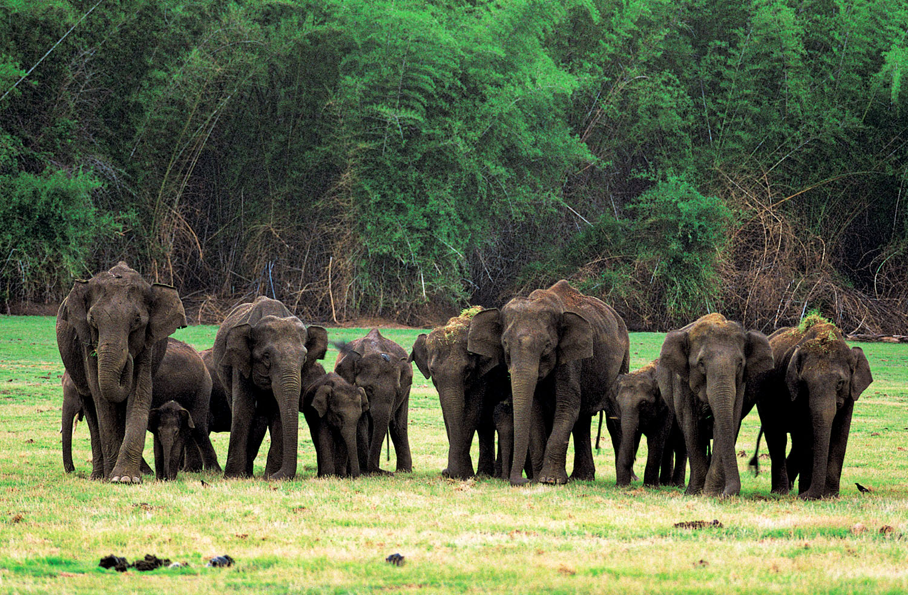

TOURIST PLACES
Hare Krishna Hill is the hillock on which this temple is situated.
ISKCON Bangalore is a charitable society with the…

Nagarahole tiger reserve forms a critical connecting
to other areas of Brahmagiri wildlife
sanctuary and Bandipur Tiger reserve.
Bandipur National Park second highest Tiger population in India.
It is located in Gundulpet taluk, Chamarajanagar district. .